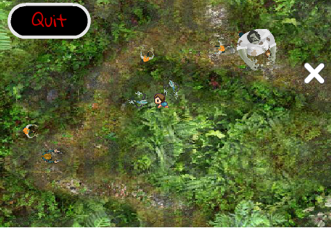
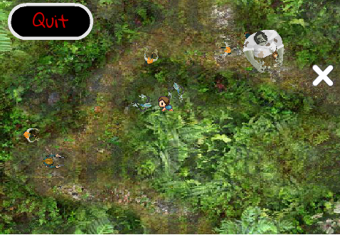
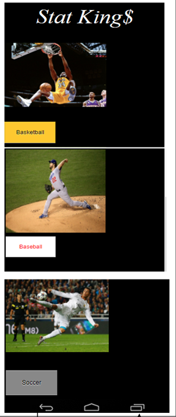
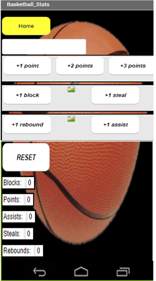
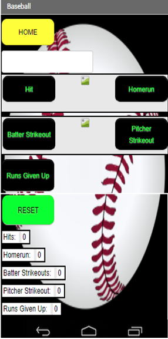
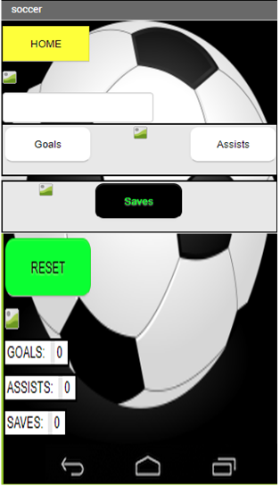

This game Zombie Warfare was designed in scratch as a project for our AP CSP class. This experience was very fun and a new experience. I am a long time video gmame player and it was a new experience to actually create my own game. My group hit some speed bumps while making this game but, we overcame them and created a really fun and creative game. Some of the troubles my group and I ran into was the main zombie boss attracting twoards the main character. Since the main character is constantly being mnoved by the user, the zombie boss can not go to one single spot. Also my group and I attempted to versioning but since we could not could at the same time versioning would get overly complicated.. My game had a logiocal and mathmatical algorithm in it. In which the main character can move in a ny direction but, when touching another object it would signal game over. This algorithm had both math and logic in it. If i were to go back and fix it I would add shooting to the game. This would take more algorithms which, after making this game I understand more and I feel my group and I would be able to achieve it.
STAT KINGS PROJECT
    Stat Kings GameThis Stat Kings App was created in order to keep track of athlete's stats. This game was programmed on another drag and drop style program, the name of the program is MIT App Inventor. As an athlete this game directly affects me. I understand the difficuilty of trying to keep track of your own stats. The problems that arose with programming this game was the user interface. It was hard to keep the boxes spaced apart but, still accessable on the same screen. Also another difficult task was keeping the ESPN them playing in the background of the game. Over all my partner Ryan and I, both being athletes, had a fun and creative time making this game. The final product turned out to be better than the expectations we had set in the beginning. P.S. A California Congresswoma even tested out the App, and she enjoyed it very much and set it was a job well done.